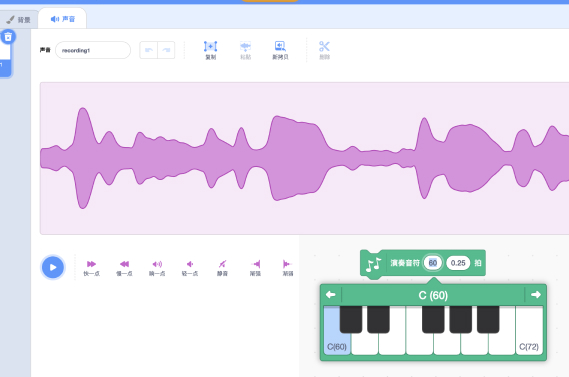

<!DOCTYPE html><html lang="zxx"><head><meta charset="UTF-8"><meta content="width=device-width,initial-scale=1.0,maximum-scale=1.0" name="viewport"><!-- Open Graph--><meta property="og:title" content="了解 CCW 共创世界"><meta property="og:type" content="website"><meta property="og:description" content="NaN"><!-- Twitter Theme--><meta name="twitter:widgets:theme" content="light"><!-- Title &amp; Favicon--><title>了解 CCW 共创世界 - 青少年 ACGN 创作者社区 | Scratch, 少儿编程社区, 图形化编程社区</title><!-- Css--><link rel="stylesheet" href="https://www.ccw.site/about/stylesheets/core.min.css"><link rel="stylesheet" href="https://www.ccw.site/about/stylesheets/skin.css"><link rel="stylesheet" href="https://www.ccw.site/about/mediaelement/skin/mejs-snowplayerskin.css"><!--if lt IE 9script(type='text/javascript' src='http://html5shiv.googlecode.com/svn/trunk/html5.js')--></head><body class="shop home-page"><!--+link('/foo', 'foo')(class="btn")--><!-- Side Navigation Menu--><!-- Side Navigation Menu--><aside data-no-scrollbar="" data-animation="push-in" class="side-navigation-wrapper enter-right"><div class="side-navigation-scroll-pane"><div class="side-navigation-inner"><div class="side-navigation-header"><div class="navigation-hide side-nav-hide"><a href="#"><span class="icon-cancel medium"></span></a></div></div><nav class="side-navigation nav-block"><ul><li class="pb-10"><a href="/about/">了解共创</a></li><li class="pb-10"><a href="/about/learn/">学习交流</a></li><li class="pb-10"><a href="/about/story/">用户故事</a></li><li class="pb-10"><a href="/about/event/">事件活动</a></li><li class="pb-10"><a href="/about/participate/">参与共创</a></li><li class="pb-10"><a href="/about/hire/">加入我们</a></li><br><li><a href="/">返回主站</a></li></ul></nav></div></div></aside><!-- Side Navigation Menu End--><!-- Side Navigation Menu End--><div class="wrapper reveal-side-navigation bkg-charcoal"><div class="wrapper-inner"><!--Header--><svg xmlns="//www.w3.org/2000/svg" version="1.1" style="display:none;" class="svg-filters"><defs><filter id="marker-shape"><feturbulence type="fractalNoise" baseFrequency="0 0.15" numOctaves="1" result="warp"></feturbulence><fedisplacementmap xChannelSelector="R" yChannelSelector="G" scale="30" in="SourceGraphic" in2="warp"></fedisplacementmap></filter></defs></svg><!-- Header header-transparent--><header data-helper-in-threshold="500" data-helper-out-threshold="500" data-bkg-threshold="500" data-sticky-threshold="200" data-compact-threshold="100" class="header header-absolute header-fixed-on-mobile header-transparent"><div class="header-inner"><div style="position: fixed;" class="pull-left"><nav class="navigation nav-left nav-back"><ul><li style="opacity: 0.8; padding-left: 30px;"><a href="/"><span style="vertical-align: middle;" class="icon-left-open-mini"></span>返回主站</a></li></ul></nav></div><div class="row nav-bar"><div class="column width-12 nav-bar-inner"><div class="row"><div class="column width-5 primary-nav-column"><nav class="navigation nav-block primary-navigation nav-right sub-menu-indicator"><ul><li class="current"><a href="/about/">了解共创</a></li><li><a href="/about/learn/">学习交流</a></li><li><a href="/about/story/">用户故事</a></li></ul></nav></div><div class="column width-2 logo-column"><div class="logo logo-center"><div class="logo-inner"><a href="/about/"></a><a href="/about/"></a></div></div></div><div class="column width-5 secondary-nav-column"><nav class="navigation nav-block primary-navigation nav-left sub-menu-indicator"><ul><li><a href="/about/event/">事件活动</a></li><li><a href="/about/participate/">参与共创</a></li><li><a href="/about/hire/">加入我们</a></li></ul></nav><nav class="navigation nav-block secondary-navigation nav-right"><ul><li class="aux-navigation hide"><!-- Aux Navigation--><a href="/about/" class="navigation-show side-nav-show nav-icon"><span class="icon-menu"></span></a></li></ul></nav></div></div></div></div></div></header><!-- Header End--><!-- Header End--><!-- Content--><div class="content clearfix reveal-footer"><style type="text/css">
    body, html {
      margin: 0;
    }
    canvas {
      display: block;
    }
    .hero-title {
      font-family: "AliHYH", "SF Pro SC","SF Pro Text","SF Pro Icons","PingFang SC","Helvetica Neue","Helvetica","Arial",sans-serif;
      font-size: 40px;
      font-weight: 800;
      position: absolute;
      top: calc(50% - 80px);
      left: calc(50% - 250px);
      width: 500px;
      height: 50px;
      line-height: 40px;
      box-sizing: border-box;
      text-align: center;
      text-decoration: none;
      /*background-color: rgba(0, 0, 0, 0.3);*/
      color: #fff;
      /*border: 1px solid #fff;*/
      border-radius: 50px;
      text-shadow: #000 0 0 10px;
      cursor: default;
    }
    .hero-title span{
        font-weight: 200;
        font-size: 20px;
    }

    .scroll-down {
  opacity: 1;
  -webkit-transition: all .5s ease-in 3s;
  transition: all .5s ease-in 3s;
}

.scroll-down {
  position: absolute;
  bottom: 30px;
  left: 50%;
  margin-left: -16px;
  display: block;
  width: 32px;
  height: 32px;
  border: 2px solid #FFF;
  background-size: 14px auto;
  border-radius: 50%;
  z-index: 2;
  -webkit-animation: bounce 2s infinite 2s;
  animation: bounce 2s infinite 2s;
  -webkit-transition: all .2s ease-in;
  transition: all .2s ease-in;
  transform: scale(1)
}

.scroll-down:before {
    position: absolute;
    top: calc(50% - 8px);
    left: calc(50% - 6px);
    transform: rotate(-45deg);
    display: block;
    width: 12px;
    height: 12px;
    content: "";
    border: 2px solid white;
    border-width: 0px 0 2px 2px;
}

@keyframes bounce {
  0%,
  100%,
  20%,
  50%,
  80% {
    -webkit-transform: translateY(0);
    -ms-transform: translateY(0);
    transform: translateY(0);
  }
  40% {
    -webkit-transform: translateY(-10px);
    -ms-transform: translateY(-10px);
    transform: translateY(-10px);
  }
  60% {
    -webkit-transform: translateY(-5px);
    -ms-transform: translateY(-5px);
    transform: translateY(-5px);
  }
}

</style>
<div id="app3d" class="section-block featured-media window-height tm-slider-parallax-container">

</div>


    
<script type="module">
// Made with TroisJS : https://github.com/troisjs/trois
import { createApp } from 'https://unpkg.com/vue@3.0.11/dist/vue.esm-browser.prod.js'
import { lerp, BufferGeometry, Camera, EffectComposer, Points, Renderer, RenderPass, Scene, ShaderMaterial, Texture, UnrealBloomPass, ZoomBlurPass } from 'https://unpkg.com/troisjs@0.3.0-beta.4/build/trois.module.cdn.min.js'
import { Clock, Color, MathUtils, Vector3 } from 'https://unpkg.com/three@0.127.0/build/three.module.js'

const { randFloat: rnd, randInt, randFloatSpread: rndFS } = MathUtils
const niceColors = [["#69d2e7","#a7dbd8","#e0e4cc","#f38630","#fa6900"],["#fe4365","#fc9d9a","#f9cdad","#c8c8a9","#83af9b"],["#ecd078","#d95b43","#c02942","#542437","#53777a"],["#556270","#4ecdc4","#c7f464","#ff6b6b","#c44d58"],["#774f38","#e08e79","#f1d4af","#ece5ce","#c5e0dc"],["#e8ddcb","#cdb380","#036564","#033649","#031634"],["#490a3d","#bd1550","#e97f02","#f8ca00","#8a9b0f"],["#594f4f","#547980","#45ada8","#9de0ad","#e5fcc2"],["#00a0b0","#6a4a3c","#cc333f","#eb6841","#edc951"],["#e94e77","#d68189","#c6a49a","#c6e5d9","#f4ead5"],["#3fb8af","#7fc7af","#dad8a7","#ff9e9d","#ff3d7f"],["#d9ceb2","#948c75","#d5ded9","#7a6a53","#99b2b7"],["#ffffff","#cbe86b","#f2e9e1","#1c140d","#cbe86b"],["#efffcd","#dce9be","#555152","#2e2633","#99173c"],["#343838","#005f6b","#008c9e","#00b4cc","#00dffc"],["#413e4a","#73626e","#b38184","#f0b49e","#f7e4be"],["#ff4e50","#fc913a","#f9d423","#ede574","#e1f5c4"],["#99b898","#fecea8","#ff847c","#e84a5f","#2a363b"],["#655643","#80bca3","#f6f7bd","#e6ac27","#bf4d28"],["#00a8c6","#40c0cb","#f9f2e7","#aee239","#8fbe00"],["#351330","#424254","#64908a","#e8caa4","#cc2a41"],["#554236","#f77825","#d3ce3d","#f1efa5","#60b99a"],["#5d4157","#838689","#a8caba","#cad7b2","#ebe3aa"],["#8c2318","#5e8c6a","#88a65e","#bfb35a","#f2c45a"],["#fad089","#ff9c5b","#f5634a","#ed303c","#3b8183"],["#ff4242","#f4fad2","#d4ee5e","#e1edb9","#f0f2eb"],["#f8b195","#f67280","#c06c84","#6c5b7b","#355c7d"],["#d1e751","#ffffff","#000000","#4dbce9","#26ade4"],["#1b676b","#519548","#88c425","#bef202","#eafde6"],["#5e412f","#fcebb6","#78c0a8","#f07818","#f0a830"],["#bcbdac","#cfbe27","#f27435","#f02475","#3b2d38"],["#452632","#91204d","#e4844a","#e8bf56","#e2f7ce"],["#eee6ab","#c5bc8e","#696758","#45484b","#36393b"],["#f0d8a8","#3d1c00","#86b8b1","#f2d694","#fa2a00"],["#2a044a","#0b2e59","#0d6759","#7ab317","#a0c55f"],["#f04155","#ff823a","#f2f26f","#fff7bd","#95cfb7"],["#b9d7d9","#668284","#2a2829","#493736","#7b3b3b"],["#bbbb88","#ccc68d","#eedd99","#eec290","#eeaa88"],["#b3cc57","#ecf081","#ffbe40","#ef746f","#ab3e5b"],["#a3a948","#edb92e","#f85931","#ce1836","#009989"],["#300030","#480048","#601848","#c04848","#f07241"],["#67917a","#170409","#b8af03","#ccbf82","#e33258"],["#aab3ab","#c4cbb7","#ebefc9","#eee0b7","#e8caaf"],["#e8d5b7","#0e2430","#fc3a51","#f5b349","#e8d5b9"],["#ab526b","#bca297","#c5ceae","#f0e2a4","#f4ebc3"],["#607848","#789048","#c0d860","#f0f0d8","#604848"],["#b6d8c0","#c8d9bf","#dadabd","#ecdbbc","#fedcba"],["#a8e6ce","#dcedc2","#ffd3b5","#ffaaa6","#ff8c94"],["#3e4147","#fffedf","#dfba69","#5a2e2e","#2a2c31"],["#fc354c","#29221f","#13747d","#0abfbc","#fcf7c5"],["#cc0c39","#e6781e","#c8cf02","#f8fcc1","#1693a7"],["#1c2130","#028f76","#b3e099","#ffeaad","#d14334"],["#a7c5bd","#e5ddcb","#eb7b59","#cf4647","#524656"],["#dad6ca","#1bb0ce","#4f8699","#6a5e72","#563444"],["#5c323e","#a82743","#e15e32","#c0d23e","#e5f04c"],["#edebe6","#d6e1c7","#94c7b6","#403b33","#d3643b"],["#fdf1cc","#c6d6b8","#987f69","#e3ad40","#fcd036"],["#230f2b","#f21d41","#ebebbc","#bce3c5","#82b3ae"],["#b9d3b0","#81bda4","#b28774","#f88f79","#f6aa93"],["#3a111c","#574951","#83988e","#bcdea5","#e6f9bc"],["#5e3929","#cd8c52","#b7d1a3","#dee8be","#fcf7d3"],["#1c0113","#6b0103","#a30006","#c21a01","#f03c02"],["#000000","#9f111b","#b11623","#292c37","#cccccc"],["#382f32","#ffeaf2","#fcd9e5","#fbc5d8","#f1396d"],["#e3dfba","#c8d6bf","#93ccc6","#6cbdb5","#1a1f1e"],["#f6f6f6","#e8e8e8","#333333","#990100","#b90504"],["#1b325f","#9cc4e4","#e9f2f9","#3a89c9","#f26c4f"],["#a1dbb2","#fee5ad","#faca66","#f7a541","#f45d4c"],["#c1b398","#605951","#fbeec2","#61a6ab","#accec0"],["#5e9fa3","#dcd1b4","#fab87f","#f87e7b","#b05574"],["#951f2b","#f5f4d7","#e0dfb1","#a5a36c","#535233"],["#8dccad","#988864","#fea6a2","#f9d6ac","#ffe9af"],["#2d2d29","#215a6d","#3ca2a2","#92c7a3","#dfece6"],["#413d3d","#040004","#c8ff00","#fa023c","#4b000f"],["#eff3cd","#b2d5ba","#61ada0","#248f8d","#605063"],["#ffefd3","#fffee4","#d0ecea","#9fd6d2","#8b7a5e"],["#cfffdd","#b4dec1","#5c5863","#a85163","#ff1f4c"],["#9dc9ac","#fffec7","#f56218","#ff9d2e","#919167"],["#4e395d","#827085","#8ebe94","#ccfc8e","#dc5b3e"],["#a8a7a7","#cc527a","#e8175d","#474747","#363636"],["#f8edd1","#d88a8a","#474843","#9d9d93","#c5cfc6"],["#046d8b","#309292","#2fb8ac","#93a42a","#ecbe13"],["#f38a8a","#55443d","#a0cab5","#cde9ca","#f1edd0"],["#a70267","#f10c49","#fb6b41","#f6d86b","#339194"],["#ff003c","#ff8a00","#fabe28","#88c100","#00c176"],["#ffedbf","#f7803c","#f54828","#2e0d23","#f8e4c1"],["#4e4d4a","#353432","#94ba65","#2790b0","#2b4e72"],["#0ca5b0","#4e3f30","#fefeeb","#f8f4e4","#a5b3aa"],["#4d3b3b","#de6262","#ffb88c","#ffd0b3","#f5e0d3"],["#fffbb7","#a6f6af","#66b6ab","#5b7c8d","#4f2958"],["#edf6ee","#d1c089","#b3204d","#412e28","#151101"],["#9d7e79","#ccac95","#9a947c","#748b83","#5b756c"],["#fcfef5","#e9ffe1","#cdcfb7","#d6e6c3","#fafbe3"],["#9cddc8","#bfd8ad","#ddd9ab","#f7af63","#633d2e"],["#30261c","#403831","#36544f","#1f5f61","#0b8185"],["#aaff00","#ffaa00","#ff00aa","#aa00ff","#00aaff"],["#d1313d","#e5625c","#f9bf76","#8eb2c5","#615375"],["#ffe181","#eee9e5","#fad3b2","#ffba7f","#ff9c97"],["#73c8a9","#dee1b6","#e1b866","#bd5532","#373b44"],["#805841","#dcf7f3","#fffcdd","#ffd8d8","#f5a2a2"]];


const vertexShader = `
    uniform float uTime;
    attribute vec3 color;
    attribute float size;
    attribute float velocity;
    varying vec4 vColor;
    void main(){
    vColor = vec4(color, 1.0);
    vec3 p = vec3(position);
    p.z = -150. + mod(position.z + uTime, 300.);
    vec4 mvPosition = modelViewMatrix * vec4( p, 1.0 );
    gl_PointSize = size * (-50.0 / mvPosition.z);
    gl_Position = projectionMatrix * mvPosition;
    }
`

const fragmentShader = `
    uniform sampler2D uTexture;
    varying vec4 vColor;
    void main() {
    gl_FragColor = vColor * texture2D(uTexture, gl_PointCoord);
    }
`

createApp({
    template: `
    <Renderer ref="renderer" pointer resize="window">
        <Camera :position="{ z: 0 }" :fov="50" />
        <Scene>
        <Points ref="points" :position="{ z: -150 }">
            <BufferGeometry :attributes="attributes" />
            <ShaderMaterial :blending="2" :depth-test="false" :uniforms="uniforms" :vertex-shader="vertexShader" :fragment-shader="fragmentShader">
            <Texture src="https://www.ccw.site/about/images/sprite.png" uniform="uTexture" />
            </ShaderMaterial>
        </Points>
        </Scene>
        <EffectComposer>
        <RenderPass />
        <UnrealBloomPass :strength="2" :radius="0" :threshold="0" />
        <ZoomBlurPass :strength="zoomStrength" />
        </EffectComposer>
    </Renderer>
    <p class="hero-title" @mouseenter="targetTimeCoef = 100" @mouseleave="targetTimeCoef = 1">Welcome to CCW<br/><span>A Metaverse Empowered by 2ndR with Love</span></p>
    <a href="#" class="scroll-down" address="true"></a>
    `,
    components: { BufferGeometry, Camera, EffectComposer, Points, Renderer, RenderPass, Scene, ShaderMaterial, Texture, UnrealBloomPass, ZoomBlurPass },
    setup() {
    const POINTS_COUNT = 15000

    const palette = niceColors[19]

    const positions = new Float32Array(POINTS_COUNT * 3)
    const colors = new Float32Array(POINTS_COUNT * 3)
    const sizes = new Float32Array(POINTS_COUNT)
    const v3 = new Vector3(), color = new Color()
    for (let i = 0; i < POINTS_COUNT; i++) {
        v3.set(rndFS(200), rndFS(200), rndFS(300))
        v3.toArray(positions, i * 3)
        color.set(palette[Math.floor(rnd(0, palette.length))])
        color.toArray(colors, i * 3)
        sizes[i] = rnd(5, 20)
    }

    const attributes = [
        { name: 'position', array: positions, itemSize: 3 },
        { name: 'color', array: colors, itemSize: 3 },
        { name: 'size', array: sizes, itemSize: 1 },
    ]

    const uniforms = { uTime: { value: 0 } }

    const clock = new Clock()

    const timeCoef = 1, targetTimeCoef = 100

    

    //var _t = this;
    //console.info(_t.targetTimeCoef);

    

    return {
        POINTS_COUNT,
        attributes, uniforms, vertexShader, fragmentShader,
        clock, timeCoef, targetTimeCoef,
    }
    },
    data() {
    return {
        zoomStrength: 0,
    }
    },
    mounted() {
    const renderer = this.$refs.renderer
    const positionN = renderer.three.pointer.positionN
    const points = this.$refs.points.points

    var _m = this;
    top.setTargetTimeCoef = function(){
        _m.targetTimeCoef = 1;
    }
    $(document).scroll(()=>{
        _m.targetTimeCoef = 1;
    })
    //this.targetTimeCoef = 1;

    renderer.onBeforeRender(() => {
        this.timeCoef = lerp(this.timeCoef, this.targetTimeCoef, 0.02)
        this.uniforms.uTime.value += this.clock.getDelta() * this.timeCoef * 4
        this.zoomStrength = this.timeCoef * 0.004

        const da = 0.05
        const tiltX = lerp(points.rotation.x, positionN.y * da, 0.02)
        const tiltY = lerp(points.rotation.y, -positionN.x * da, 0.02)
        points.rotation.set(tiltX, tiltY, 0)
    })
    },
    methods: {
    updateColors() {
        return;
        const colorAttribute = this.$refs.points.geometry.attributes.color
        const ip = randInt(0, 99); const palette = niceColors[ip]; console.log(ip)

        const color = new Color()
        for (let i = 0; i < this.POINTS_COUNT; i++) {
        color.set(palette[randInt(0, palette.length)])
        color.toArray(colorAttribute.array, i * 3)
        }
        colorAttribute.needsUpdate = true
    },
    },
}).mount('#app3d')


$(function() {
    $('.scroll-down').click (function() {
      $('html, body').animate({scrollTop: $('#about').offset().top - 60 }, 'slow');
      return false;
    });
  });

</script>
<!-- Feature Section 3--><div id="about" class="section-block bkg-gradient-cold-ocean ccw-repbg title-shadow"><div class="row flex"><div class="column width-8 push-2"><div class="feature-content"><div class="feature-content-inner center no-padding-on-mobile"><!--h2.color-white.mb-0 About CCW--><h2 class="color-white weight-semi-bold">关于共创世界</h2><p class="lead color-white">共创世界是面向下一代 ACGN 创作者的 UGC 平台
 <br>用户可以轻代码协同制作高互动性游戏和动画并邀请朋友一起创作游玩</p><p class="lead color-white">充分释放创造力，人人都能成为二次文艺复兴的“达芬奇”</p></div></div></div></div></div><!-- Feature Section 3--><!-- Column Section--><div class="section-block replicable-content bkg-grey-ultralight"><div class="bkg-grey-ultralight"><div class="width-12 v-align-top"><div data-extra-space-top="60" data-extra-space-bottom="400" data-push-section="#sticky-second" class="freeze"><div class="pt-20 bkg-grey-ultralight"><h3 class="center">强大易用的<span class="ccw-hl-bg">创作工具和引擎</span>解除创作瓶颈 ，7 岁都能学能玩</h3></div></div></div></div><div class="row flex mt-100"><div class="column v-align-middle"><div><!-- Scratch Feature Grid--><div class="team-2 pt-0 bkg-white border-grey-light"><div class="row pt-50 pb-25"><div class="column width-8 offset-2 center"><h3 class="weight-semi-bold">我们要做一个像剪映一样易用的游戏引擎</h3><h4>它源于 Scratch，但超越 Scratch</h4><p>Scratch 是由美国麻省理工学院 MIT 的媒体实验室和乐高支持并且开发的新一代编程语言和创作工具。<br>全球已有超过 8000 万的用户会使用 Scratch 语言进行创作。<br>共创世界的工具基于全球广泛使用的 Scratch 语言进行改造，<br>增加了大量扩展和 API，提升了引擎性能，让 Scratch 从教学工具变成了生产力工具。</p></div></div><div class="row"><div class="column width-10 offset-1"><div class="row content-grid-3"><div class="grid-item"><div data-hover-easing="easeInOut" data-hover-speed="500" data-hover-bkg-color="#ffffff" data-hover-bkg-opacity="0.9" class="thumbnail rounded no-margin-bottom"></div><div class="team-content-info center"><h4 class="mb-5 weight-semi-bold">图形化编程</h4><p>通过拖拽式的操作，大大降低了编程的门槛。共创世界通过扩展 Scratch 的高级函数和增加数学函数，Python 和 C 语言中支持的编程特性在 Scratch 也支持了。</p></div></div><div class="grid-item"><div data-hover-easing="easeInOut" data-hover-speed="500" data-hover-bkg-color="#ffffff" data-hover-bkg-opacity="0.9" class="thumbnail rounded no-margin-bottom"></div><div class="team-content-info center"><h4 class="mb-5 weight-semi-bold">美术和图形图像</h4><p>美术创作不止可以在纸上完成，在创作工具的支持下，无论是位图还是矢量图都能轻松编辑。 当然也可以通过手机拍摄照片，通过 App 或小程序自动同步到 CCW 的创作工具中，轻松创作交互式动画大片。</p></div></div><div class="grid-item"><div data-hover-easing="easeInOut" data-hover-speed="500" data-hover-bkg-color="#ffffff" data-hover-bkg-opacity="0.9" class="thumbnail rounded no-margin-bottom"></div><div class="team-content-info center"><h4 class="mb-5 weight-semi-bold">音乐和音频处理</h4><p>编写一段 MIDI，导入一段背景音乐，录制一段旁白。使用创作工具都能轻松完成。使用音乐和音频工具，不仅可以作曲，为作品添加背景音乐，还能制作口播节目，音频小故事等等。</p></div></div></div></div></div><div class="row"><div class="column width-12"><!-- Team Grid End--><!-- Hero 5 Section--><div class="section-block hero-5 hero-5-2 clear-height show-media-column-on-mobile bkg-blue"><div class="media-column width-6 bgvideo-container"><video poster="https://www.ccw.site/about/videos/poster-image-extentions.jpg" x5-playsinline playsinline x5-video-player-type="h5" webkit-playsinline autoplay loop muted><source src="https://www.ccw.site/about/videos/extentions.mp4" type="video/mp4"><source src="https://www.ccw.site/about/videos/extentions.webm" type="video/webm"></video></div><div class="row"><div class="column width-4 push-7"><div class="hero-content split-hero-content"><div class="hero-content-inner left"><p class="lead color-white">更多扩展，更多 API，更高性能</p><p class="color-grey-light">Scratch 作为基本的创作语言在全球有广泛的使用基础。 几乎像英语一样成为了新生代全民会用的创作语言。 共创世界没有选择重造轮子，而是选择在 Scratch 的基础上进行深度开发。</p><p class="color-grey-light">扩展就像 SDK，可以让 Scratch 的功能更强大。 我们把人脸识别、物理引擎、高级数学函数、高级绘图引擎等等功能集成到了 Scratch 中。 极大地突破了引擎的限制，让制作更复杂的程序成为可能。</p><p class="color-grey-light">在这里，作品不像 B 站的视频，也不像 4399 的小游戏。 在共创世界的 API 加持下，游戏可以支持 MMO，作品可以调用共创世界的 API，获取当前玩家的信息和状态，甚至可以做到作品内投币。</p><p class="color-grey-light">大多数编程教育公司使用的 Scratch 版本，以及官方版本一直有运行低效的问题。 共创世界在不破坏创作体验的情况下，重构了游戏和作品运行引擎，让作品支持更高分辨率和帧率，运行效率更高。</p></div></div></div></div></div><!-- Hero 5 Section End--></div></div></div></div></div></div><div class="row"></div><div class="bkg-white mt-50"><div class="bkg-white pt-50"><div class="width-12 v-align-top"><div data-extra-space-top="60" data-extra-space-bottom="500" data-push-section="#section-together" class="freeze"><div class="pt-20 bkg-white"><h3 class="center">共创世界是充满<span class="ccw-hl-bg">同龄人自制游戏和动画</span>的世界</h3></div></div></div><div class="row"></div></div></div><div class="bkg-white"><div id="sticky-second" class="row flex pt-100"><div class="column width-12 v-align-middle"><div><div class="row flex"><div class="column width-6 push-5 offset-1"><div class="feature-image mb-mobile-50"><div class="feature-image-inner center-on-mobile"><a data-content="iframe" data-toolbar="" data-modal-mode="" href="https://www.ccw.site/scratch-player?worksOid=607bafe6ab7f4f78d1758eca" class="tml-link mlink"></a></div></div></div><div class="column width-5 pull-7"><div class="feature-content"><div class="feature-content-inner"><h2 class="mb-30">纪念碑谷 Scratch 版</h2><p class="lead">经典游戏复刻，利用埃舍尔的艺术加上大量数学知识，原作者都说赞</p><p>这款复刻纪念碑谷的是由 <a href="https://www.ccw.site/student/607966ec240aa14523f8d911" target="_blank">yk1boy</a> 一人花 9 个月的时间制作的。最惊人的是游戏里的图形素材、音乐和算法都是他自学完成的。寻路算法是在 A* 算法的变种算法，里面大量使用三角函数进行坐标转化，光这个算法就是一个 985 大学本科毕业设计的水平了。而他完成这个作品的时候只有 14 岁。</p><p> <a href="https://www.ccw.site/student/607966ec240aa14523f8d911" target="_blank" class="button medium rounded border-theme thick bkg-hover-theme color-theme color-hover-white">逛逛他的作品空间</a></p></div></div></div></div><!-- Feature Section Yk1boy End--><!-- Feature Section 冒险世界--><div class="row flex pt-100"><div class="column width-6"><div class="feature-image mb-mobile-50"><div class="feature-image-inner center-on-mobile"><a data-content="iframe" data-toolbar="" data-modal-mode="" href="https://www.ccw.site/scratch-player?worksOid=60bb9678885c3e7c94cd3b82" class="tml-link mlink"></a></div></div></div><div class="column width-5 push-1"><div class="feature-content"><div class="feature-content-inner"><h2 class="mb-30">冒险世界 2</h2><p class="lead">原创游戏，设定完整，玩法丰富，预计要花 2 年持续迭代完善的大作</p><p>一个好的作品不是一次就干成的。在社区的粉丝反馈下，作者<a href="https://www.ccw.site/student/608bcfd0a28f105d9ef7c7a7" target="_blank">蒲绒</a>设计了完善的游戏设定，持续地更新作品。 这个预计要花 2 年设计的作品，保持每月的更新，现在已经升级到了 L2.6 版。</p><p> <a href="https://ccw.site/detail/60bb9678885c3e7c94cd3b82?inviteCode=v008EgVZ7QEdd4uy" target="_blank" class="button medium rounded border-theme thick bkg-hover-theme color-theme color-hover-white">试玩《冒险世界 2》</a></p></div></div></div><!-- Feature Section 冒险世界 End--><!-- Feature Section 小明--><div class="row flex pt-100"><div class="column width-6 push-5 offset-1"><div class="feature-image mb-mobile-50"><div class="feature-image-inner center-on-mobile"><a data-content="iframe" data-toolbar="" data-modal-mode="" href="https://www.ccw.site/scratch-player?worksOid=6155ab90e137153ccdd3ca2e" class="tml-link mlink"></a></div></div></div><div class="column width-5 pull-7"><div class="feature-content"><div class="feature-content-inner"><h2 class="mb-30">小明同学 系列动画</h2><p class="lead">原创 IP 系列动画，热爱观察生活的 6 年级女生，打算连载 100 集</p><p>在易用的创作引擎下，学习了 3 个月就拦不住创作灵感的爆棚。<a href="/student/6072871d26b89753f05466f2" target="_blank">仰望璀璨星空的女孩</a>把过去画在纸上的《小明同学》搬上了社区，碾获上千点赞。哦，对了，小明同学一家人的小红同学已经单飞了。她向大家证明了： 1. 谁说女孩不行？！ 2. 谁说只有编程高手才能肝作品？！</p><p> <a href="https://www.ccw.site/student/6072871d26b89753f05466f2" target="_blank" class="button medium rounded border-theme thick bkg-hover-theme color-theme color-hover-white">逛逛她的小明同学</a></p></div></div></div></div><!-- Feature Section 小明 End--></div><div class="section-block stats-3 pt-100 bkg-white"><div class="center"><h4 class="weight-semi-bold">但共创世界里的作品远不止于此</h4><p class="description">截至 2021 年 10 月，近半年共创新增了</p></div><div class="row content-grid-3 no-margin-top"><div class="grid-item mega-stat tmh-perspective"><div style="backface-visibility: hidden; transition: -webkit-transform 1000ms cubic-bezier(0.42, 0, 0.58, 1) 0s, opacity; transform: translate3d(0px, 0px, 0px) rotateX(0deg) rotateY(0deg) rotateZ(0deg) scale3d(1, 1, 1); opacity: 1; visibility: visible; transform-origin: 50% 50% 0px;" class="stat"><div class="stat-inner"><p class="counter color-grey"><span data-count-from="10" data-count-to="50" class="stat-counter">50</span> K+</p><p class="description">名活跃创作者</p></div></div></div><div class="grid-item mega-stat tmh-perspective"><div style="backface-visibility: hidden; transition: -webkit-transform 1000ms cubic-bezier(0.42, 0, 0.58, 1) 0s, opacity; transform: translate3d(0px, 0px, 0px) rotateX(0deg) rotateY(0deg) rotateZ(0deg) scale3d(1, 1, 1); opacity: 1; visibility: visible; transform-origin: 50% 50% 0px;" class="stat"><div class="stat-inner"><p class="counter color-grey"><span data-count-from="10" data-count-to="50" class="stat-counter">50</span>0 K+</p><p class="description">创作作品数</p></div></div></div><div class="grid-item mega-stat tmh-perspective"><div style="backface-visibility: hidden; transition: -webkit-transform 1000ms cubic-bezier(0.42, 0, 0.58, 1) 0s, opacity; transform: translate3d(0px, 0px, 0px) rotateX(0deg) rotateY(0deg) rotateZ(0deg) scale3d(1, 1, 1); opacity: 1; visibility: visible; transform-origin: 50% 50% 0px;" class="stat"><div class="stat-inner"><p class="counter color-grey"><span data-count-from="10" data-count-to="15" class="stat-counter">15</span>00 万</p><p class="description">累计创作时间（分钟）</p></div></div></div></div></div></div></div></div></div><div class="bkg-grey-ultralight mt-100"><div class="column width-12 v-align-top"><div data-extra-space-top="60" data-extra-space-bottom="400" data-push-section=".footer" class="freeze"><div class="pt-20 bkg-grey-ultralight"><h3 class="center">共创世界是几万创作者<span class="ccw-hl-bg">共同创造的 UGC 世界</span></h3><h4 class="center">在共创世界，我们提倡<br><span class="weight-bold">所有人学习所有人，所有人尊重所有人，所有人帮助所有人</span></h4></div></div></div></div><div class="row"> </div><div id="section-together" class="animate active animate-in mt-50"><div class="row flex boxes"><div class="column width-4"><div class="box rounded bkg-white border-grey-light"><div class="culture-header pb-20 center"><h4>所有人<span class="ccw-hl-bg yellow">学习</span>所有人</h4></div><hr class="no-margins"><div class="pt-20"><p> <span class="label rounded border-green mr-10">通过试玩学</span> 类比是创意思考的燃料与火焰。 通过试玩别人的作品汲取灵感是创造力的起点。先通过临摹一个作品，再到结合多个作品的灵感</p><p> <span class="label rounded border-green mr-10">教程</span> 不必然是“老师”设计的。 三人行必有我师，在共创，每个人都是“老师”，都能制作教程分享自己的创作心得。</p><p> <span class="label rounded border-green mr-10">教别人</span> 是学习中最高阶的方式。 通过在社区里的开源、评论、教程制作等功能，把自己的知识沉淀到社区中，互相学习。</p></div></div></div><div class="column width-4"><div class="box rounded bkg-white border-grey-light"><div class="culture-header pb-20 center"><h4>所有人<span class="ccw-hl-bg yellow">尊重</span>所有人</h4></div><hr class="no-margins"><div class="pt-20"><p> <span class="label rounded border-green mr-10">版权</span> 尊重每个人在社区中的贡献。使用到别人提供的素材和代码片段要获得授权并积极地 credit 对方。也积极开放自己的版权，助力其他人的创作。</p><p> <span class="label rounded border-green mr-10">投币</span> 是对创作者创造的价值的认可。</p><p> <span class="label rounded border-green mr-10">建设性的建议</span> 才能帮助创作者持续地完善自己的作品。 无论是否喜欢创作者的作品，都可以向他提出建设性的意见。多使用 “如果增加了... 功能就会更好了”，而不是 “不好玩”。</p></div></div></div><div class="column width-4"><div class="box rounded bkg-white border-grey-light"><div class="culture-header pb-20 center"><h4>所有人<span class="ccw-hl-bg yellow">帮助</span>所有人</h4></div><hr class="no-margins"><div class="pt-20"><p> <span class="label rounded border-green mr-10">工作室</span>是一种在共创中小伙伴们自发形成的组织。大家为了共同的目标互相协作干作品。在工作室内部大家互相帮助，有的工作室还会在社区里主动帮助其他创作者 debug 或提建议。</p><p> <span class="label rounded border-green mr-10">开源</span>是在社区里最直接的对其他创作者提供帮助的方式。 开源的工程，任何人都可以查看源代码，获得算法，获得素材。 甚至有的工作室或者星球守护者已经专门利用开源的特性</p></div></div></div></div></div></div><!-- Service Section--><div id="services" class="section-block replicable-content"><div class="row"><div class="column width-3"><h2 class="mb-0">共创世界</h2><h2 class="weight-semi-bold">让有意义的事情有意思</h2></div><div class="column width-8 offset-1"><div class="row"><div class="column width-12"><p class="lead mb-25">学习、创作、帮助他人和改变世界是我们每天坚持在做的事。 但它们被世俗误传：“学习是痛苦的”、“只有上学才是在学习”、“这么小，懂什么创作”、“等你学习好了，以后才能改变世界”、“帮助他人和慈善要先成了社会名流才行”... </p><p class="lead mb-25">Think Different！在共创世界，我们把学习融入到创作的方方面面，在强烈的创作动机驱动下，学习应该是一种乐趣。 通过互相帮助互相尊重和互相学习的社区氛围，我们可以在每次创作、讨论或投币中帮助他人，也被他人帮助和鼓舞。 我们每次观察世界、表达观点、用作品引发人们深思、发明创造、甚至一个善意的建议和对多样观点的拥抱，都是在践行改变世界。</p><p class="lead mb-50 weight-semi-bold">我们一起，让有意义的事情有意思</p></div></div><div class="row flex"><div class="column width-6"><h4 class="mb-30 weight-semi-bold">学习</h4><p class="mb-50">70% 在实践中学，20% 跟别人学，10% 跟书本学。 在共创世界，主张的不是妖魔化学习，也不妖魔化游戏。 在这里，我们可以通过模仿别人的作品、通过获得社区小伙伴反馈、通过自己搜索和探索学习。</p></div><div class="column width-6"><h4 class="mb-30 weight-semi-bold">创作</h4><p class="mb-50">当我们开始用积木搭建拱桥，用沙子搭建城堡的时候，我们就已经在开始创作了。 创作是人类最有趣的行为。 通过创作，我们把说学习的知识、所观察的世界以及对世界的改造融为一体。创作没有起点，在我们出生便开始；也没有终点，停止创作即生命结束。</p></div><div class="column width-6"><h4 class="mb-30 weight-semi-bold">改变世界</h4><p>改变世界不是鸡血，它可以润物细无声地被进行。当我们每一次通过作品表达对世界的看法或期许，当我们体察世界遇到的问题并用作品去试图解决，甚至是一个建议一个善意的互助，我们就在践行改变世界了。改变世界也很难。 因为我们要挑战权威，对一切“理所应当”充满好奇和善意的质疑。这个过程中我们必然会遇到大量来自身边的不解和质疑。 Don't Panic! You are not alone. Because the people who are crazy enough to think they can change the world, are the ones who do. </p></div><div class="column width-6"><h4 class="mb-30 weight-semi-bold">帮助他人</h4><p>共创世界正如名字，我们希望这是一个被共同创建的世界。 不作恶意假设，尊重他人观点和帮助他人在共创世界是对大家的基本要求。帮助他人不一定需要成为大神。一个点赞、一个投币、一个善意的评论、一个建设性的意见、一个 bug 的修改、一个素材的贡献、一个作品描述中的感谢都是在帮助他人。践行对他人的帮助不仅在共创中对大家有要求，也希望大家能把这样的精神带到生活中，在互相帮助中汲取力量。</p></div></div></div></div></div><!-- Service Section End--></div><!-- Content End--><!-- Footer--><footer data-animate-reveal="" class="footer footer-fixed"><div class="footer-top"><div class="row flex"><div class="column width-2 push-5"><div class="widget center left-on-mobile"><div class="footer-logo"><a href="https://www.ccw.site/about/"></a></div></div></div></div></div></footer><!-- Footer End--></div></div><!-- Js--><script src="https://www.ccw.site/about/javascripts/jquery-3.2.1.min.js"></script><script src="https://www.ccw.site/about/javascripts/mediaelement-and-player.min.js"> </script><script src="https://www.ccw.site/about/javascripts/timber.master.min.js"></script><script>$(function() {$( '.media-controls video' ).mediaelementplayer();$( '.mlink' ).summitLightbox();});</script></body></html>